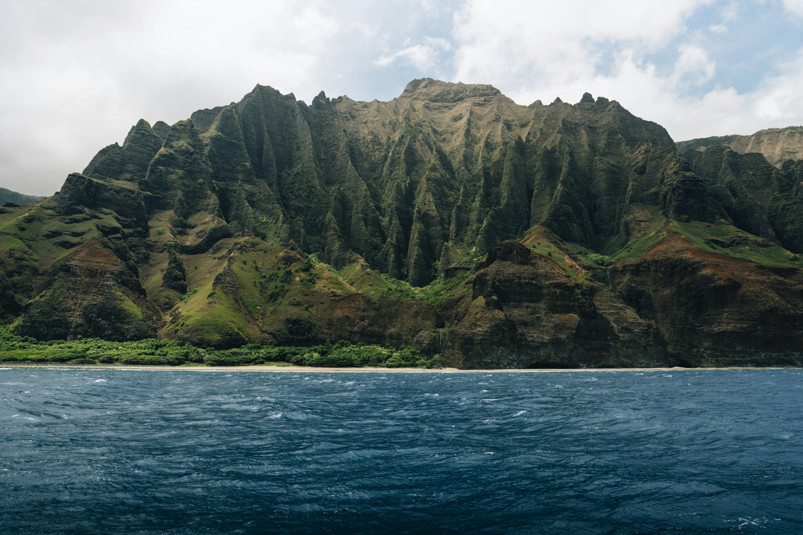

Explorer Tahiti
Randonnées sauvages et sentiers au cœur d'une nature luxuriante
Des sentiers pour tous les aventuriers !
Que l'on veuille se ressourcer ou s'aventurer, découvrez des parcours adaptés à vos envies
La riche topographie de Tahiti lui permet d'offrir des tracés variés dans leur intensité comme leur ambiance ! Gravissez les collines pour admirer un panorama à couper le souffle, faites semblant de vous perdre dans une forêt luxuriante, ou promenez vous simplement au bord du sable fin et de l'eau turquoise.
Nos tracés officiels sont balisés, avec une indication de la difficulté, des pistes de repli et la distance restante avant l'arrivée.




Une fresque aux mille couleurs !
À la rencontre d'une faune et d'une flore exceptionnelles
Avec plus de 1000 espèces de plantes répertoriées, la nature luxuriante de Tahiti vous offre des tableaux chatoyants et fourmillants de détails. Plus de 6000 espèces d'animaux y vivent, vous offrant la perspective de rencontres charmantes au détour d'un écart.


Le Tiare est LA fleur typique de Tahiti, qui se distingue par une symbolique forte due à l'élégance de sa simplicité et la senteur délicate qu'elle dégage. Outre son identité comme emblème de Tahiti, la Gardenia taitensis de son nom scientifique est utilisée comme plante médicinale, huile de massage ou simplement élément décoratif. Vous la croiserez donc souvent lors de vos pérégrinations.
Planifier ses randonnées
Les outils indispensables pour organiser vos sorties en toute sérénité